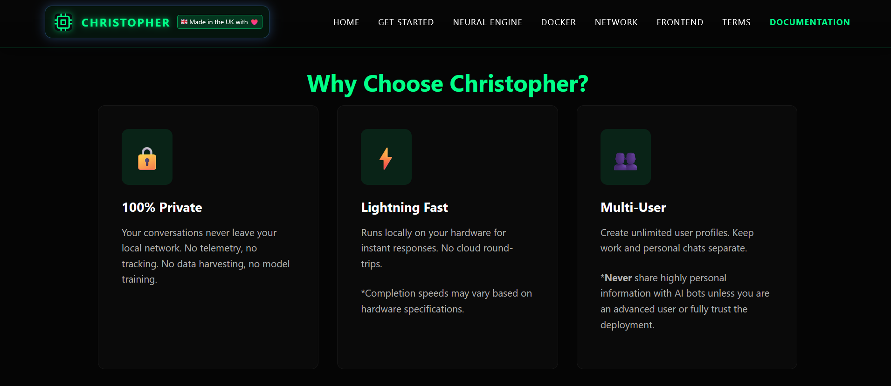
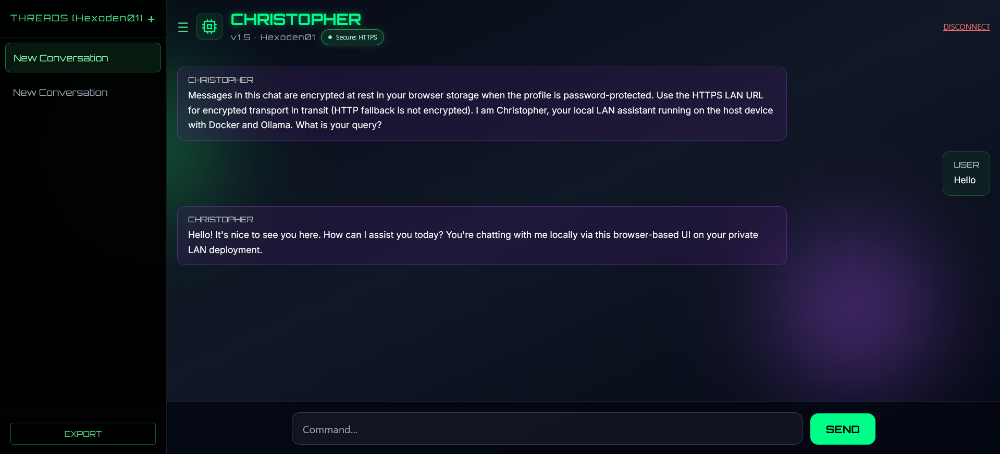

What I Built
- Next.js interface with responsive cyberpunk styling
- Profile-based chat sessions and conversation management
- Setup scripts for Windows and Linux/macOS workflows
- HTTPS LAN access using Caddy and generated certificates
Christopher AI is a self-hosted, multi-user AI chat platform built for local-first privacy. It runs LLM inference on your own hardware and is accessed over your LAN.
The project combines a modern frontend, containerized deployment, and practical setup scripts so users can get running with minimal friction.
I wanted a project that combined my interest in full stack engineering with a clear real-world value proposition: private AI chat that works on a local network without forcing cloud dependency.
It let me explore UI design, secure user flows, deployment, and practical infrastructure decisions in one cohesive system.
Christopher AI demonstrates that I can bridge product design, infrastructure, and frontend implementation, while also thinking about privacy and user control.
It is also a good example of building something practical rather than just experimental.
A fully functional local AI interface that can be hosted on a home network, maintained with Docker, and expanded over time without needing a heavy cloud setup.

